Wasatch Front — Running & Peakbagging
Foothills & Northern SLC
-
Parley's Ridge
16.2 mi (run), 6,365 ft (vertical gain)
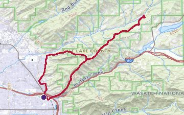
-
Foothill Ultimate Ridge Linkup (FURL)
30.2 mi (run), 11,613 ft (vertical gain)
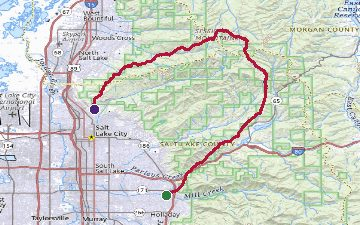
-
Wasatch Steeplechase Course
16.7 mi (run), 5,594 ft (vertical gain)
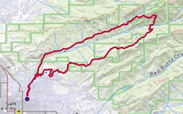
-
Avenues to City Creek
2.0 mi (run), 344 ft (vertical gain)
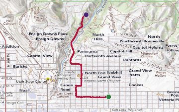
-
Mount Wire
4.0 mi (run), 2,037 ft (vertical gain)
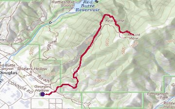
Great Salt Lake
Neff's Canyon & Mount Olympus
-
Mount Olympus
6.4 mi (run), 4,052 ft (vertical gain)
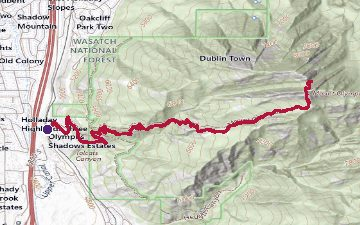
-
Wildcat Ridge Traverse
12.2 mi (run), 7,212 ft (vertical gain)
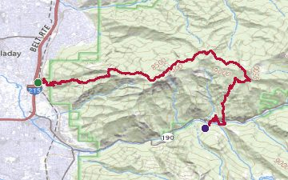
-
Neff's Canyon Descent
5.1 mi (run), 2,347 ft (vertical gain)
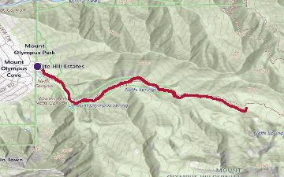
-
Neff's Canyon to Ridgeline
7.9 mi (run), 3,562 ft (vertical gain)
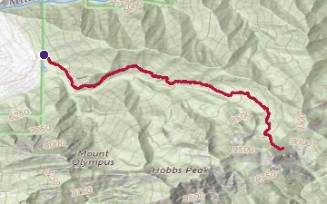
-
Mount Olympus — West Slabs (attempt)
3.2 mi (run), 3,129 ft (vertical gain)
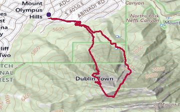
-
Mount Olympus — West Slabs (full route)
5.3 mi (run), 4,394 ft (vertical gain)
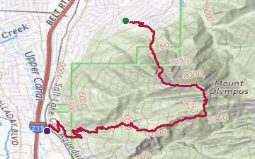
Mill Creek Canyon
-
Grandeur Peak via Mill Creek
16.2 mi (run), 7,379 ft (vertical gain)
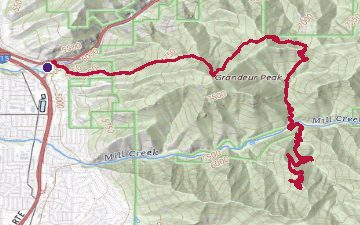
-
Grandeur Peak Loop
9.9 mi (run), 3,967 ft (vertical gain)
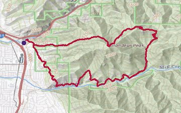
-
Mill Creek Canyon Loop
11.2 mi (run), 3,398 ft (vertical gain)
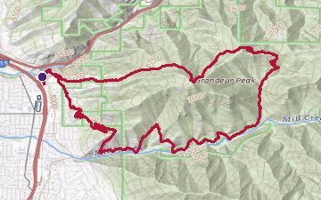
-
Mill Creek Lamb's Trail Loop
13.4 mi (run), 4,771 ft (vertical gain)
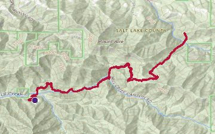
-
Mill Creek to Gobbler's Knob
9.7 mi (run), 3,724 ft (vertical gain)
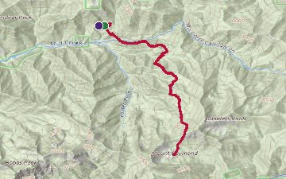
-
Pipeline–Big Water–Crest Loop
24.3 mi (run), 4,311 ft (vertical gain)
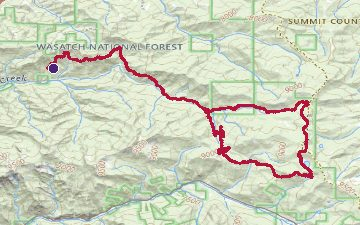
-
SLC to PC
31.2 mi (run), 7,297 ft (vertical gain)
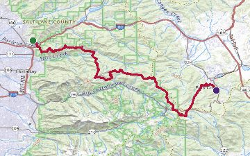
Twin Peaks, Broads Fork & Ferguson Canyon
-
Twin Peaks
12.7 mi (run), 11,135 ft (vertical gain)
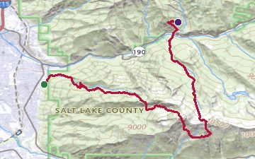
-
Broads Fork to Twin Peaks
8.3 mi (run), 5,484 ft (vertical gain)
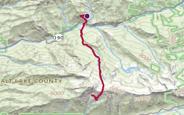
-
Broads Fork to Twin Peaks (variant)
8.3 mi (run), 5,484 ft (vertical gain)

-
Broads Fork Twin Peaks Loop
9.6 mi (run), 5,220 ft (vertical gain)
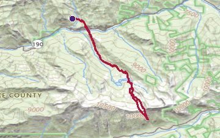
-
Broads Fork Run
8.1 mi (run), 5,712 ft (vertical gain)
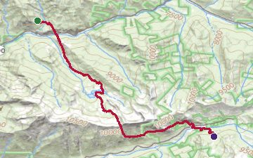
-
WURL — Wasatch Ultimate Ridge Linkup
33.8 mi (run), 21,607 ft (vertical gain)
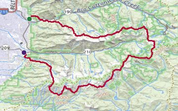
-
Storm Mountain North Ridge via Ferguson Canyon
7.8 mi (run), 5,086 ft (vertical gain)
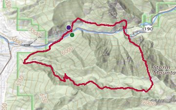
-
Mineral Slab
2.5 mi (run), 1,522 ft (vertical gain)
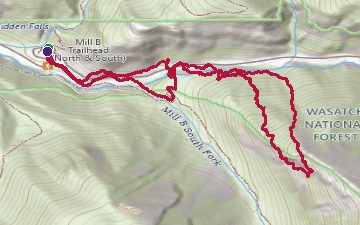
-
Lake Blanche and Sundial Peak
11.2 mi (run), 5,436 ft (vertical gain)
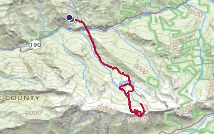
-
Sundial Peak via Lake Blanche
10.4 mi (run), 4,699 ft (vertical gain)
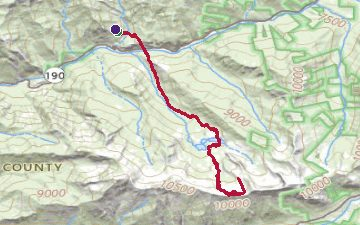
Big Cottonwood Canyon
-
Big Cottonwood Canyon Traverse
22.0 mi (run), 6,289 ft (vertical gain)
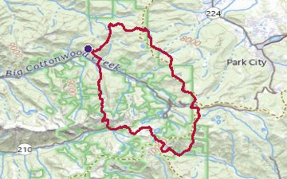
-
Big Cottonwood Traverse — Alt Route
24.3 mi (run), 6,919 ft (vertical gain)
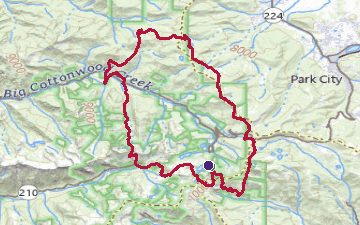
-
Desolation Lake Loop
12.4 mi (run), 3,963 ft (vertical gain)
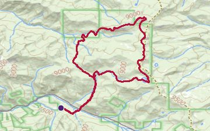
-
Gobbler's Knob via Butler Fork
4.2 mi (run), 3,182 ft (vertical gain)
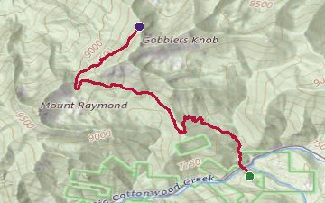
-
Kessler Peak
1.9 mi (run), 2,607 ft (vertical gain)
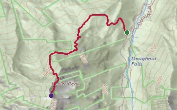
-
Mineral Fork to Peak 10820 Loop
13.1 mi (run), 5,144 ft (vertical gain)
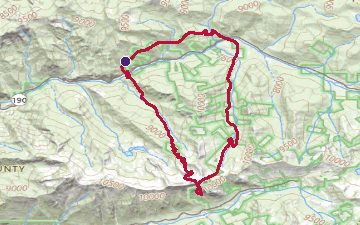
-
Mineral Fork to 10820
10.5 mi (run), 4,390 ft (vertical gain)
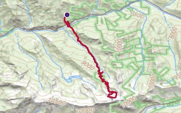
-
Mule Hollow Ridge
4.6 mi (run), 8,871 ft (vertical gain)
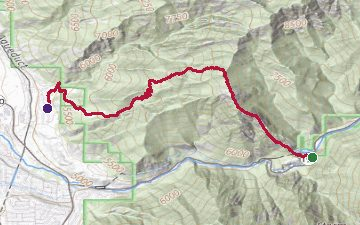
-
Stairs Gulch and Mule Hollow Loop
4.4 mi (run), 2,295 ft (vertical gain)
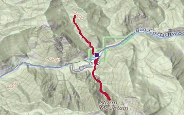
-
Coalpit Gulch to North Thunder Mountain
9.0 mi (run), 6,393 ft (vertical gain)
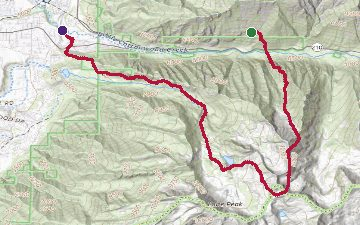
-
Kessler Peak — Descent to Car
3.4 mi (run), 127 ft (vertical gain)
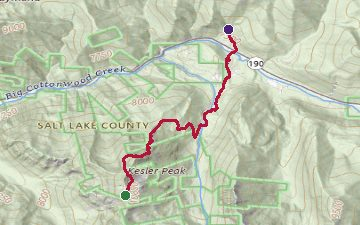
Little Cottonwood Canyon, Alta & Brighton
-
Alta to Brighton
5.5 mi (run), 1,825 ft (vertical gain)
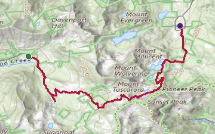
-
Alta–Brighton Ridgeline Loop
8.2 mi (run)
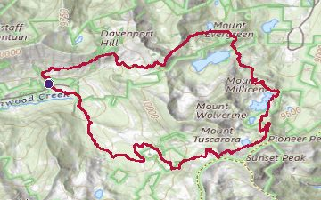
-
Brighton Cirque
6.2 mi (run), 2,972 ft (vertical gain)
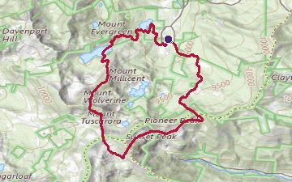
-
Brighton Cirque (extended loop)
12.9 mi (run), 3,686 ft (vertical gain)
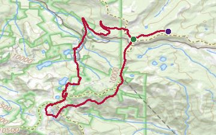
-
Catherine's Pass
4.5 mi (run), 1,812 ft (vertical gain)
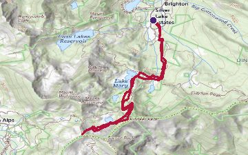
-
Cardiff Fork Loop from Alta
12.7 mi (run), 5,169 ft (vertical gain)
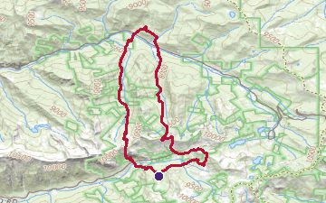
-
South Ridge of Superior
4.5 mi (run), 2,816 ft (vertical gain)
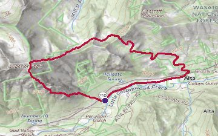
-
Speedgoat 50K Course
32.6 mi (run), 11,391 ft (vertical gain)
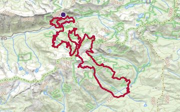
-
Sugarloaf Peak and Cecret Lake
5.3 mi (run), 2,186 ft (vertical gain)
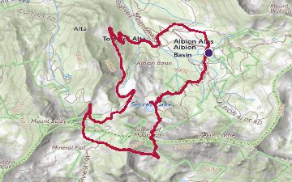
-
Little Cottonwood Canyon Direct Ascent
16.8 mi (run), 3,336 ft (vertical gain)
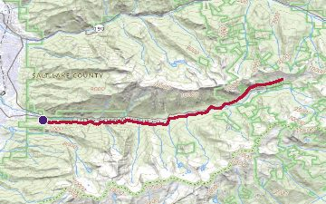
- Pfeifferhorn 9.6 mi (run), 4,357 ft (vertical gain)
- White Baldy 11.0 mi (run), 4,479 ft (vertical gain)
- Twin Peaks via Lisa Falls 7.7 mi (run), 5,038 ft (vertical gain)
- The Pawn Approach 2.4 mi (run), 2,324 ft (vertical gain)
Lone Peak & American Fork Canyon
- Lone Peak 11.4 mi (run), 6,190 ft (vertical gain)
- Lone Peak via Jacob's Ladder 15.6 mi (run), 6,593 ft (vertical gain)
- Box Elder Peak 12.1 mi (run), 4,714 ft (vertical gain)
- Elder and Silver Peak Loop 15.0 mi (run), 6,703 ft (vertical gain)
-
Silver Lake
15.7 mi (run), 6,361 ft (vertical gain)

- Silver Lake (alternate) 15.7 mi (run), 6,361 ft (vertical gain)
- Tibble Fork Loop 22.3 mi (run), 4,190 ft (vertical gain)
- American Fork Canyon Run 11.6 mi (run), 5,468 ft (vertical gain)
- Central Wasatch Cross-Canyon Ramble 28.2 mi (run), 12,635 ft (vertical gain)
- South Wasatch Foothills Loop 10.9 mi (run), 4,905 ft (vertical gain)
Timpanogos & Utah Valley
- Timpanogos Traverse 13.8 mi (run), 6,690 ft (vertical gain)
- Timpanogos 13.8 mi (run), 5,693 ft (vertical gain)
- Timpanogos Alternate Route 9.0 mi (run), 6,427 ft (vertical gain)
- Rock Canyon Access Trail (Provo) 31.7 mi (run), 8,810 ft (vertical gain)
Park City & Wasatch Back
- Park City Skyline Trail Traverse 26.2 mi (run), 8,010 ft (vertical gain)
- Bob's Trail to Park City Skyline 8.8 mi (run), 2,183 ft (vertical gain)
- Park City to Gobbler's Knob 27.7 mi (run), 7,018 ft (vertical gain)
- Quarry Mountain 2.2 mi (run), 988 ft (vertical gain)
- Rail Trail 22.3 mi (run), 207 ft (vertical gain)
- Silver Creek Loop 8.7 mi (run), 1,258 ft (vertical gain)
- Guardsman Pass to Sunset Peak 14.6 mi (run), 6,745 ft (vertical gain)
- Guardsman Pass and Blood's Lake 9.3 mi (run), 2,625 ft (vertical gain)
- Wasatch Crest to Uintas Crossing 186.5 mi (run), 15,987 ft (vertical gain)
- Promontory Trail 21.1 mi (run), 5,282 ft (vertical gain)
- Wasatch Back Loop 7.0 mi (run), 1,475 ft (vertical gain)
- Rockport: Beach to "The Blob" 4.8 mi (run), 1,226 ft (vertical gain)
- Park City to Snowbird Traverse 27.7 mi (run), 5,810 ft (vertical gain)
Uintas
- Kings Peak via Henry's Fork 27.1 mi (run)
- King's Peak (followed Krupicka track) 24.1 mi (run), 4,728 ft (vertical gain)
- Island Lake 7.6 mi (run), 1,211 ft (vertical gain)
Wasatch Front — Backcountry Skiing
- Mount Raymond via Porter Fork 10.0 mi (ski), 5,033 ft (vertical gain)
- Flagstaff Mountain — West Bowl Exit 3.9 mi (ski), 2,888 ft (vertical gain)
- The Cone (Hayden Peak) — Brighton-Mill Creek Divide 4.2 mi (ski), 1,827 ft (vertical gain)
- Heart of Darkness → Cardiac Chute → Cardiff Pass 8.1 mi (ski), 6,760 ft (vertical gain)
- Cardiac Ridge 0.9 mi (ski), 957 ft (vertical gain)
- Suicide Chute, Mt. Superior 1.7 mi (ski), 1,727 ft (vertical gain)
- Bonkers Couloir (splitboard) 7.5 mi (ski), 4,528 ft (vertical gain)
- Pfeifferhorn (ski descent) 10.0 mi (ski), 4,845 ft (vertical gain)
- Pfeifferhorn Time Trial (ski) 9.1 mi (ski), 4,146 ft (vertical gain)
- Alta Toward Mount Greeley 11.3 mi (ski), 5,497 ft (vertical gain)
- Alta Toward Sugarloaf 11.3 mi (ski), 5,456 ft (vertical gain)
- Laps on Peak 10,420 5.5 mi (ski), 2,533 ft (vertical gain)
- Park City to Brighton (Easter tour) 7.0 mi (ski), 2,785 ft (vertical gain)
- Park City to Brighton (February tour) 14.1 mi (ski), 4,027 ft (vertical gain)
- Timpanogos — Cascade Cirque via Dry Canyon 13.2 mi (ski), 10,089 ft (vertical gain)
Sierra Nevada — Running
- John Muir Trail 207.2 mi (run)
- Trans-Yosemite Route 74.4 mi (run)
- Crowley Lake Trail Run 44.4 mi (run), 8,898 ft (vertical gain)
- Evolution Traverse 29.4 mi (run), 17,413 ft (vertical gain)
- Evolution Traverse (Aug 2025) 29.7 mi (run), 23,060 ft (vertical gain)
- Mount Whitney from Lone Pine (followed Kuenzle track) 43.1 mi (run), 11,667 ft (vertical gain)
- Cactus to Clouds 19.7 mi (run), 13,438 ft (vertical gain)
- Cactus to Clouds (followed David Hedges track) 28.4 mi (run), 12,008 ft (vertical gain)
- Cottonwood–Marble Canyon 31.6 mi (run), 4,765 ft (vertical gain)
- Pratt to Nordhoff Lookout 18.4 mi (run), 4,645 ft (vertical gain)
Sierra Nevada — Skiing
- Mount Whitney — Hiker's Route (ski) 9.3 mi (ski), 3,518 ft (vertical gain)
- Monarch Divide 38.5 mi (ski), 13,167 ft (vertical gain)
Red Rock, Nevada
- Rainbow Triple Peak Loop 8.4 mi (run), 3,642 ft (vertical gain)
- Rainbow Cirque 7.5 mi (run), 4,688 ft (vertical gain)
- Calico Traverse 7.5 mi (run), 4,412 ft (vertical gain)
- Ice Box Pinnacle 6.7 mi (run), 3,635 ft (vertical gain)
- Mount Wilson 8.8 mi (run), 3,858 ft (vertical gain)
- Big Mac's 6 Peak Cirque 24.6 mi (run), 11,577 ft (vertical gain)
- Gunsight Notch Peak Loop 12.2 mi (run), 8,501 ft (vertical gain)
- Black Velvet Peak — Epinephrine Descent 1.7 mi (run), 409 ft (vertical gain)
- Bridge Mountain 14.3 mi (run), 5,094 ft (vertical gain)
Zion, Utah
- Zion Traverse 48.6 mi (run), 12,735 ft (vertical gain)
- West Rim 15.1 mi (run), 3,868 ft (vertical gain)
- Lady Mountain 3.8 mi (run), 2,835 ft (vertical gain)
Escalante & Capitol Reef, Utah
- Death Hollow Loop & Mamie Creek Natural Bridge 21.7 mi (run)
- Death Hollow via Boulder Mail Trail 14.7 mi (run)
- Muley Arch Loop via Upper Muley Twist Canyon 9.2 mi (run)
- Navajo Knobs 4.5 mi (run)
Sedona, Arizona
- Three Passes 20.3 mi (run), 4,125 ft (vertical gain)
- Casner Canyon Loop 12.1 mi (run), 2,378 ft (vertical gain)
- Casner Canyon — Out With a Bang 8.4 mi (run), 2,446 ft (vertical gain)
Grand Teton, Wyoming
- Teton Crest Trail (7:27) 39.6 mi (run), 9,445 ft (vertical gain)
- Paintbrush Divide 19.1 mi (run), 4,422 ft (vertical gain)
- The Grand Teton — "Skill Issue" (followed Kuenzle track) 14.3 mi (run), 7,165 ft (vertical gain)
Wind River Range, Wyoming
Missoula, Montana
Cascades — Ski Descents
- Mount Rainier — Earth, Wind & Fire (followed Kuenzle track) 13.3 mi (ski), 9,023 ft (vertical gain)
- Mount Shasta — Rime and Punishment (followed Kuenzle track) 10.4 mi (ski), 8,843 ft (vertical gain)
- Mount Hood — Intergalactic Skimo (followed Kuenzle track) 6.7 mi (ski), 5,394 ft (vertical gain)
Big Bend, Texas
- Big Bend 100 117.8 mi (run), 0 ft (vertical gain)
- Big Bend Loop 31.8 mi (run), 7,701 ft (vertical gain)
Boulder, Colorado
- LA Freeway (followed Krupicka track) 32.2 mi (run), 20,384 ft (vertical gain)
- Longs Peak — Standard Keyhole Route 13.6 mi (run), 5,936 ft (vertical gain)